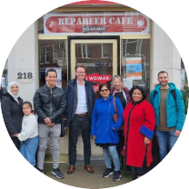
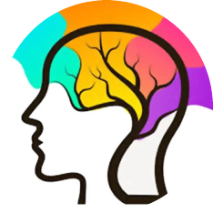
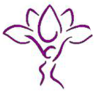
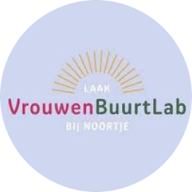
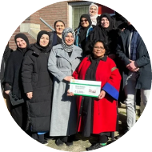
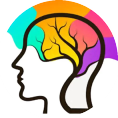
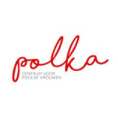
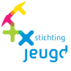
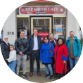

Community of Practice · The Hague

Kracht(vrouwen) in de Wijk
Kracht(vrouwen) in de Wijk is a Community of Practice for and by women's organizations in The Hague. In this learning environment, organizations come together to share knowledge, learn from each other, and strengthen their impact. By pooling experiences, tackling challenges together, and developing practical solutions, we are building a sustainable network that supports and connects women in The Hague.
Since January 2024
Who We Are
Kracht(vrouwen) in de wijk is a Community of Practice (CoP) that arose from the need of women's organizations in The Hague to learn together and become stronger together.
There are dozens of women's organizations active in The Hague, each with their own background, goals, and approach. Although they differ from each other, they surprisingly often encounter the same questions: How do we find a good space? How can we grow? How do we make our impact visible?
10
Organizations
250
Total Members
300
Activities






Partners
Collaborators
The Hague University of Applied Sciences, together with women's organizations in The Hague and the municipality of The Hague, combined this shared need into a sustainable learning environment. Since January 1, 2024, organizations from different neighborhoods—such as Laak, Escamp, and Schilderswijk—have been meeting regularly to share experiences, knowledge, and practical solutions. In this way, we are gradually building a strong, connected network in which women's organizations inspire, support, and strengthen each other.
Across The Hague
Find Organizations
VrouwenBuurtLab Laak

Amal Coaching Wijkz
Stichting POLKA Coöperatie Eva
Stichting de Talenten ”klup”
ReVa MoedersNo organizations match that search.

What's on
All Events
Calendar
Moments together
View More
Media


Comments